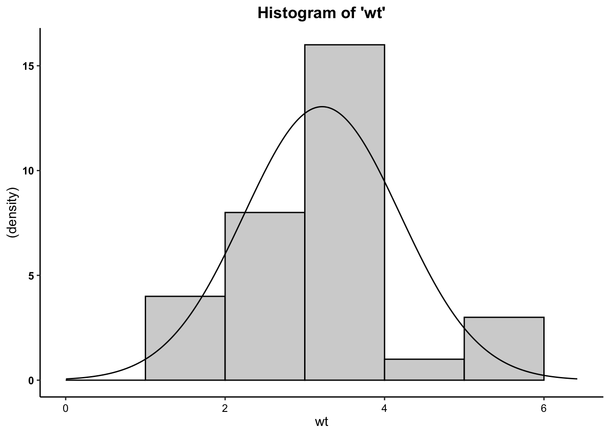

Correlation (Pearson’s Product Moment Correlation Coefficient)
Is there a relationship between a car’s weight
(wt) and its fuel economy
(mpg)?
Here, we’ll be working from the mtcars data set, to examine the
relationship between a car’s weight (wt:
measured in thousands of pounds) and its fuel economy
(mpg: measured in miles per gallon).
What is the correlation?
The correlation (\(r\)) or Pearson’s product-moment correlation coefficient examines the association or relationship between two interval-ratio variables to see if the relationship reflects a true relationship that we could expect to find in the population. The test also tells us the strength (weak, moderate, strong) and direction (positive, negative) of that relationship. Rarely, we will see a non-relationship or a perfect relationship.
Assumptions and Diagnostics for Correlation
The assumptions for the Correlation are…
- Linearity
- Normality
In addition, the previously-discussed assumptions for other tests (independence of observations) is implied, since all of these bivariate tests require random samples.
1. Linearity
- Variables move together in a linear fashion. Visual inspection of
scatterplot to see if relationship is linear
(straight-line). If you have updated to the most recent version of the
vannstatspackage then you can call a scatterplot using thescatterfunction:
- Given that we don’t see a non-linear
(e.g. curvilinear) relationship, and that the points generally cluster
near the “line of best fit” (AKA the regression line),
we have met the assumption of linearity.
2. Normality
- Distributions must be relatively normal. Unlike the t-test and
ANOVA, where you look at clustered plots (histograms, boxplots, and Q-Q
plots), displaying the means, broken out by levels/categories of the
grouping variable for correlation, you must visually inspect the
same plots for each variable.
- Inspect individual plots for each variable…
- Histograms
- Box-and-Whiskers plot
- Normality (Q-Q) plot
- Inspect individual plots for each variable…
In the past, you may have been instructed to use the Shapiro-Wilk test to assess normality. This is wrong. Unfortunately, tests such as these are overly-sensitive to trivial deviations from normality, and may result in you believing you must correct for normality by transforming your data. Please do not do this. The correlation is robust enough to provide results even in the presence of data that are not fully normally-distributed.
2a. Histogram

- We can see from the histograms that the
distributions of both variables are relatively normal. Overall, these
data are close enough to normal.
2b. Box-and-Whisker Plots

- We can see from the boxplots that the distributions of both variables are relatively normal. Interestingly, the boxplot for the weight variable has some issues: the median is closer to the 75th percentile, and the upper whisker (right tail) of the distribution for weight variable has some outliers, implying a longer right tail. While we might consider removing these outlying cases, we would need to do so statistically (considering how outlying an outlier is)… which is beyond the scope of this class. Moreover, because there are so few cases in the data set (\(N = 32\)), I would not consider removing cases, as doing so would drastically alter estimation (e.g. \(\bar{X}\), etc.). Taken together, these data are close enough to normal.
2c. Normality (Q-Q) Plots

- We can see from the Q-Q plots that the distributions of both variables are relatively normal, with the exception of the tails. The tails of both weight and mpg have observed data points that are higher than would be expected if the data followed a normal distribution. This problem is particularly evident at the right tail of the distribution. We might consider removing outliers, but doing so would alter the expected normal distribution/curve for the rest of the data, and is not suggested. Plus, with only 32 cases, it’s difficult to determine if these data would look similar with a more adequate sample size. Importantly, there does not seem to be a discernable pattern around the normality line: There isn’t a fanning out from the line (e.g. like the bell of a trumpet). As such, these data are close enough to normal.
- Across all three plots of
mpgand all three plots ofwt, the variables do not seem to drastically deviate from normality. Therefore,we can assume normality.
The Correlation Test Calculation
The calculation for the correlation is:
\(r = \frac{\sum (X - \bar{X})(Y - \bar{Y})}{\sqrt{\sum (X - \bar{X})^2 \sum(Y - \bar{Y})^2}}\)
In addition, the degrees of freedom (\(df\)) for the test is…
* \(df = N - 2\)
Running the Correlation
For Correlation, within the p.corr function, the dependent
variable is listed first and the independent variable is listed
second.
##
## Pearson's product-moment correlation
##
## data: mpg and wt
## ùíì = -0.86766, df = 30, p-value = 1.294e-10
## alternative hypothesis: true correlation is not equal to 0
## 95 percent confidence interval:
## -0.9338264 -0.7440872
## sample estimates:
## ùíï
## -9.559044In the output above, we see the \(r\)-obtained value (-.8676594), the degrees of freedom (30), and the p-value (1.294 x \(10^{-10}\) = .0000000001294), which is much less than our set alpha level of .05).
To interpret the findings, we report the following information:
- The test used
- If you reject or fail to reject the null hypothesis
- The variables used in the analysis
- The degrees of freedom, calculated value of the test (\(r_{obtained}\)), and \(p-value\)
- \(r(df) = r_{obtained}\), \(p-value\)
“Using the Pearson’s correlation test (\(r\)), I reject/fail to reject the null hypothesis that there is no association between variable one and variable 2, in the population, \(r(?) = ?, p ? .05\)”
- “Using the Pearson’s correlation test (\(r\)), I reject the null hypothesis that there is no association between the weight of a car and its fuel economy in terms of miles per gallon, in the population, \(r(30) = -.8676594, p \lt .05\). In particular, we have a strong negative relationship between car weight and car mpg, such that, as the weight of the car increases, the miles-per-gallon decreases.”